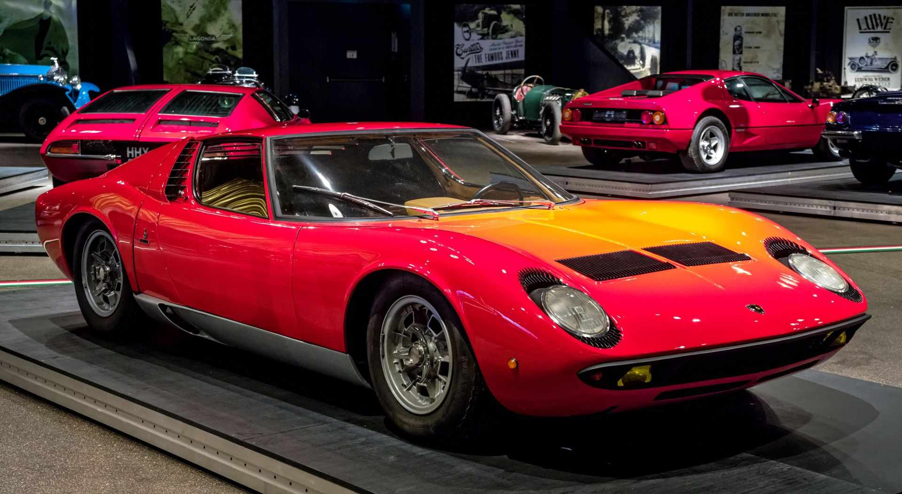

Benz Patent Motor Car On January 29, 1886, Carl Benz applied for a patent for his “vehicle powered by a gas engine.” The patent – number 37435 – may be regarded as the birth certificate of the automobile. In July 1886 the newspapers reported on the first public outing of the three-wheeled Benz Patent Motor Car, model no. 1.
Lamborghini Miura
The Lamborghini Miura, introduced in 1966 by the Italian manufacturer, is often said to be the first supercar. By the 1970s and 1980s the term was in regular use for such a car, if not precisely defined.
There are two types of working machines: technological and transport. The material to be processed in a technological machine is a solid, liquid or gaseous object, which the machine changes its shape, properties, state and location. Material that can be converted into transport vehicles